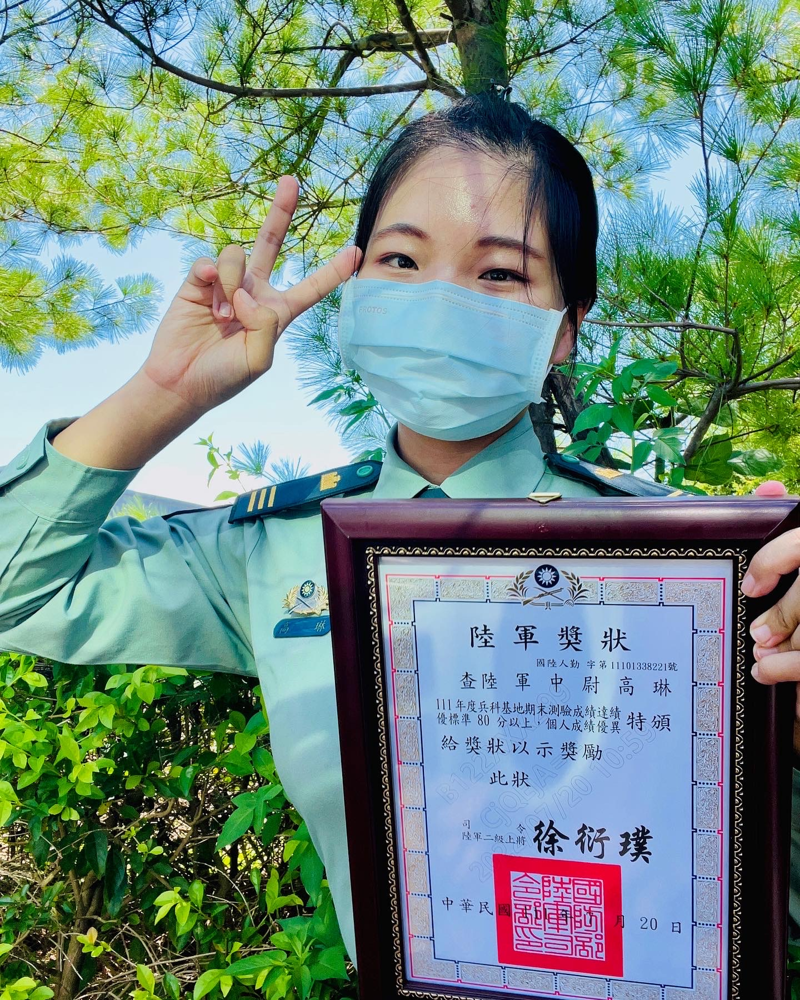

高琳的申請書

兩百字內的個人簡介
我是高琳，畢業於國防大學理工學院的環境資訊及工程學系軍事工程組，於2018年畢業後在陸軍第十軍團各所屬單位歷練領導及幕僚職，並於2023年12月退伍。
這5年間，我學會管理超過百人的團隊，且於2022年因表現優異獲頒陸軍獎狀；也在幕僚職上學習到專案管理及如何以專業立場與上司溝通。
然而對軍職體系有所瞭解後，確定此非我熱情所在，我決定轉往軟體產業並規劃2025年前往愛爾蘭發展。
為了成為軟體工程師，做過什麼努力？若有具體作品請分享給我們。
- 聯成電腦Java基礎班，利用假日學習
- 透過影音及社群平台瞭解軟體工程師工作日常及職涯發展，如加入line相關社群、追蹤youtube工程師創作者
- 提升英打速度
- 取得ITS的認證
- 利用FreeCodeCamp學習HTML及CSS
- 聯成電腦Java網站開發（4/1前完課）
如果參與這個訓練，會怎麼安排學習時間？
在2023年12月退伍後，我利用3個月完成退輔會報到、退伍金的理財規劃、處理好家庭生活瑣事並安排愛爾蘭留學申請期程。
4月課程開始直到畢業，除適度運動及維持英文能力外，我將全心投入課程任務，有充足的時間應對每週40～60小時的學習份量。
說明會中強調將訓練學員不斷面對困難，我對於自己的學習能力、邏輯思考及毅力有信心可以跟上課程。
是否有想要加入的公司？為什麼想加入該公司？
我希望加入Google位於愛爾蘭的歐洲總部，原因有以下幾點：
- 作為全球最知名的科技公司之一，在Google工作將能接觸到最頂尖的人群，看看各路大神怎麼工作怎麼生活。
- Google以輕鬆隨意的企業文化著名，秉持著工作有挑戰也有歡樂，在佔據一半人生的工作期間，我希望感受自己的工作是有價值且快樂的。
- Google map常分不清車輛在高架道上還是平面道路讓我很困擾，為了用路安全我必須去改善這個系統。
請描述一件產生明顯負面情緒的經歷，如何處理該情緒？
因軍中固化的階級及年資壓制，我擔任營級幕僚時，曾被年資大8年的連級主官在會議上羞辱。當時對方誤會我未提前告知就在會議上提報他的連隊，所以在會議上對我惡言相向。
我確信我的作法沒有問題且我的主官也給予支持，於是會議後我積極與對方溝通此次誤會及討論未來合作模式。這次有效率地化解危機不但讓長官認同我的溝通能力，我與學長也在新的合作模式中相互欣賞，調職後也持續互相提供資源及助力。
被誤會且在公眾場合遭到言語羞辱的委屈我會在日記中抒發，無論多糟的一天，我都會在日記中寫下3個感謝。堅持這個習慣已經3年，日記幫助我公平客觀的敘述事情經過、抒發感想及轉念，也幫助我在回頭看時明確的感受自己的成長。
關於這份申請網頁，分享一個開發時的技術心得。
以前習慣讀懂課本、看完教學影片後在練習實作，但因為內容太多，常做到一半卡住又要回頭翻課本。
這次我嘗試先理解基礎架構，跳過眾多的元素、屬性，先開始寫申請網頁，需要時再針對性的看影片學習，這讓我更有效率的完成申請書，且使用過的元素也更容易記住。
請用簡短兩三句話，描述對你而言，最重要的一項人際交往原則。
在不勉強自己的前提下交朋友，欣賞並學習旁人的優點。
其他想要對我們說的事情？
- 我規劃2025秋季入學愛爾蘭 MSc Computer Science (Conversion) at UCD，並希望透過累積作品，嘗試申請非Conversion的課程
- 說明會提到訓練結束後有履歷診斷及指導，並追蹤畢業學員就業狀況，因此畢業後在準備申請學校同時我也想試試自己能夠獲得怎麼樣的工作機會。